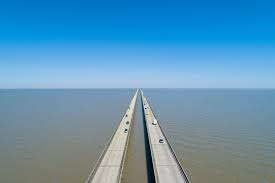
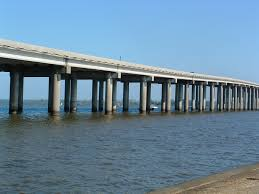

USA
Stany Zjednoczone Ameryki to jedno z największych i najpotężniejszych państw na świecie, znane z różnorodności kulturowej, wielkich metropolii takich jak Nowy Jork, Los Angeles, oraz przyrodniczych cudów, takich jak Wielki Kanion.

|  | |
|  |